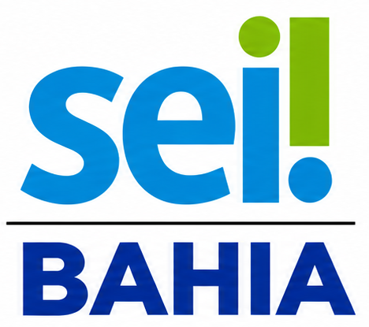

📄 Processos digitais
Apoiar a modernização dos procedimentos administrativos municipais.

Implantação do Sistema Eletrônico de Informações na administração pública municipal.
O Sistema Eletrônico de Informações (SEI) é uma plataforma de gestão de processos e documentos eletrônicos, utilizada para modernizar procedimentos administrativos, reduzir o uso de papel e facilitar a tramitação de informações.
O projeto de implantação em Serra do Ramalho busca contribuir para a transformação digital da administração municipal.
Apoiar a modernização dos procedimentos administrativos municipais.
Promover a preparação dos servidores para utilização do sistema.
Contribuir para a redução do uso de papel e dos processos físicos.
Esta seção apresentará as atividades desenvolvidas durante o processo de implantação do SEI! Bahia no município, incluindo reuniões, capacitações e articulações institucionais.
Estamos organizando os registros das atividades relacionadas à implantação do SEI! Bahia em Serra do Ramalho.
Em breve, serão disponibilizadas informações sobre as ações realizadas, reuniões, capacitações e registros fotográficos.
Fotografias das atividades de implantação, reuniões e capacitações serão disponibilizadas neste espaço.